简述
HTTP 缓存相信都不陌生，因为它是在前端性能优化中必不可少的一个环节。在首次进入或者请求数据正常传输数据，而当再次进入或者请求数据时，可以走本地或者服务器上的缓存，来节省流量、优化性能、提高用户体验、降低网络负荷等等。
web 缓存主要用来缓存html 文件、js 文件、css 文件、数据，基本上都是提升客户端/浏览器请求到服务器之间的速度，当然也可以结合数据压缩如gzip、7z等等加快响应数据传输。
在整个应用中可以错多层缓存结构这里不多做介绍，因为前面已经大致介绍过了，这里主要介绍和前端比较相关的HTTP 缓存。
HTTP 缓存
大致分为下面几步来加深对HTTP 中的缓存理解和应用场景。
- 必知缓存策略的基础
- 缓存的判断策略
- 用户操作对缓存策略的影响
- 缓存储存的位置
- 缓存策略之间的对比
必知缓存策略的基础
大致把协议分为强缓存（过期策略）和协商缓存（协商策略）两类缓存，可能不太准确只是自己的现在的见解，浏览器/客户端通过这两种策略决定使用缓存中的副本还是从服务器中获取最新的资源。
- 强缓存（过期策略）：也就是缓存副本有效期。
一个缓存副本必须满足以下任一条件，浏览器会认为它是有效的，足够新的，而直接从缓存中获取副本并渲染：- 含有完整的过期时间控制头信息（HTTP 协议报头），并且仍在有效期内
- 浏览器已经使用过这个缓存副本，并且在一个会话中已经检查过新鲜度
- 协商缓存（协商策略）：服务器返回资源的时候有时在控制头信息带上这个资源的实体标签 Etag（Entity Tag），它可以用来作为浏览器再次请求过程的校验标识。如果发现校验标识不匹配，说明资源已经被修改或过期，浏览器需求重新获取资源内容。
| key | 描述 | 缓存策略 | 首部类型 |
|---|---|---|---|
| Pragma | 指定缓存机制（http 1.0 字段） | 强缓存（过期策略） | 响应首部字段 |
| Cache-COntrol | Cache-Control 通用消息头字段，被用于在 http 请求和响应中，通过指定指令来实现缓存机制。 |
强缓存（过期策略） | 响应/请求首部字段 |
| Expires | Expires 响应头包含日期/时间， 即在此时候之后，响应过期。 |
强缓存（过期策略） | 响应首部字段 |
| Last-Modified | Last-Modified 是一个响应首部，其中包含源头服务器认定的资源做出修改的日期及时间。 |
协商缓存（协商策略） | 响应首部字段 |
| If-Modified-Since | If-Modified-Since 是一个条件式请求首部，服务器只在所请求的资源在给定的日期时间之后对内容进行过修改的情况下才会将资源返回，状态码为 200。 |
协商缓存（协商策略） | 请求首部字段 |
| ETag | ETagHTTP 响应头是资源的特定版本的标识符。 |
协商缓存（协商策略） | 响应首部字段 |
| If-None-Match | If-None-Match 是一个条件式请求首部。对于 GET 和 HEAD 请求方法来说，当且仅当服务器上没有任何资源的 ETag 属性值与这个首部中列出的相匹配的时候，服务器端会才返回所请求的资源，响应码为 200 。 |
协商缓存（协商策略） | 请求首部字段 |
| If-Match（辅助） | If-Match 的使用表示这是一个条件请求。在请求方法为 GET 和 HEAD 的情况下，服务器仅在请求的资源满足此首部列出的 ETag值时才会返回资源。 |
协商缓存（协商策略） | 请求首部字段 |
| If-Unmodified-Since（辅助） | If-Unmodified-Since 只有当资源在指定的时间之后没有进行过修改的情况下，服务器才会返回请求的资源，或是接受 POST 或其他 non-safe 方法的请求。 |
协商缓存（协商策略） | 请求首部字段 |
| Vary（辅助） | Vary 是一个HTTP响应头部信息，它决定了对于未来的一个请求头，应该用一个缓存的回复(response)还是向源服务器请求一个新的回复。 |
协商缓存（协商策略） | 响应首部字段 |
缓存又分为强缓存和协商缓存。其中强缓存包括Expires和Cache-Control，主要是在过期策略生效时应用的缓存。弱缓存包括Last-Modified和ETag，是在协商策略后应用的缓存。强弱缓存之间的主要区别在于获取资源时是否会发送请求。
强缓存和协商缓存
- 如果本地缓存过期，则要依靠协商缓存
- 强缓存的 http 状态码是
200 OK - 协商缓存的 http 状态码是
304 Not Modified
强缓存（过期策略）
属于强缓存（过期策略）的有如下：
- Cache-COntrol
- Expires
Cache-Control
Cache-Control用于指定资源的缓存机制，可以同时在请求和响应头中设定。但是Cache-Control中的属性也分为请求和响应缓存指令，大致分为如下：
缓存请求指令
客户端可以在HTTP 请求中使用的标准 Cache-Control 指令。
Cache-Control: max-age=
Cache-Control: max-stale[=]
Cache-Control: min-fresh=
Cache-control: no-cache
Cache-control: no-store
Cache-control: no-transform
Cache-control: only-if-cached
缓存响应指令
服务器可以在响应中使用的标准 Cache-Control 指令。
Cache-control: must-revalidate
Cache-control: no-cache
Cache-control: no-store
Cache-control: no-transform
Cache-control: public
Cache-control: private
Cache-control: proxy-revalidate
Cache-Control: max-age=
Cache-control: s-maxage=
Cache-Control: cache-directive[,cache-directive]。cache-directive为缓存指令，大小写不敏感，共有12个与HTTP缓存标准相关，如下所示。其中请求指令7种，响应指令9种。Cache-Control可以设置多个缓存指令，以逗号,分隔。
可缓存性
- public： 表明响应可以被任何对象（包括：发送请求的客户端、代理服务器、CDN 等中间代理服务器等等）缓存，如下图所示：
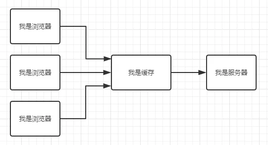 - private：表明响应只能被单个用户缓存，不能作为共享缓存（即代理服务器不能缓存它）。
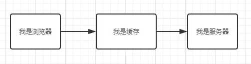 - no-cache：指定不缓存响应，表明资源不进行缓存，但是设置了
no-cache之后并不代表浏览器不缓存，而是在获取缓存前要向服务器确认资源是否被更改。相当于max-age: 0, must-revalidate - no-store： 绝对禁止缓存，请求和响应都不缓存，每次请求都从服务器获取完整资源。
到期
- max-age=
: 设置缓存存储的最大周期，超过这个时间缓存被认为过期(单位秒)。 - s-maxage=
: 覆盖 max-age或者Expires头，但是仅适用于共享缓存(比如各个代理)，私有缓存会忽略它。 - max-stale[=
] : 指定时间内，即使缓存过期，资源依然有效。 - min-fresh=
：表示客户端希望获取一个能在指定的秒数内保持其最新状态的响应。
重新验证和重新加载
- muse-revalidate: 使用缓存资源之前，必须先验证状态，如果页面是过期的(如 max-age)，则去服务器进行获取。
- proxy-revalidate： 与
must-revalidate作用相同，但它仅适用于共享缓存（例如代理），并被私有缓存忽略。
其他
- no-transform：强制要求代理服务器不要对资源进行转换，禁止代理服务器对
Content-Encoding、Content-Range、Content-Type等字段的修改，因此代理服务器的gzip压缩将不被允许。
no-cache 和 no-store
还有一点需要注意的是，no-cache并不是指不缓存文件，no-store才是指不缓存文件。no-cache仅仅是表明跳过强缓存，强制进入协商策略。
常用设置
禁止缓存Cache-Control: no-cache, no-store, must-revalidate
缓存静态资源Cache-Control:public, max-age=86400
Expires
Expires指定缓存的过期时间，为绝对时间，即某一时刻。
注意：参考本地时间进行比对，在指定时刻后过期。RFC 2616 建议最大值不要超过 1 年。
max-age 与 Expires
Cache-Control中的max-age指令用于指定缓存过期的相对时间。资源达到指定时间后过期。该功能与Expires类似。但其优先级高于 Expires，如果同时设置max-age和Expires，max-age生效，忽略Expires。
Cache-Control > Expires
强缓存大致流程
强缓的设置流程图大致如下：
协商缓存
在没有强缓存时，就会走协商缓存，协商缓存大致流程：
- 第一次请求时，服务端返回给客户端一个key(如 Etag 的资源值、Last-Modified 最后修改时间)和资源
- 第二次请求时，客户端带上第一次服务端返回的 key
- 服务器端验证当前的 key 是否和上次返回给客户端的是否一致，一致返回 304 使用缓存，不一致重新返回 key 和新的资源
属于协商缓存（协商策略）的有如下：
- Last-Modified/If-Modified-Since/If-Unmodified-Since
- ETag/If-Match/If-None-Match
Last-Modified/If-Modified-Since/If-Unmodified-Since
Last-Modified/If-Modified-Since大致流程如下：
- 第一次请求时，服务器会获取资源的最后修改时间通过设置
Last-Modified，返回给客户端 - 后面请求时，客户端(浏览器)会自动带上
If-Modified-Since字段 - 服务器从新获取修改时间与
If-Modified-Since中的时间对比，如果没有变化返回304状态码（浏览器得知 304 状态码，资源从缓存中获取），如果改变返回200并且更新资源、更新Last-Modified
上面的流程是在设置不使用强缓存时的场景，这个只是现在的理解可能有很多的不太完善的地方。
Last-Modified
Last-Modified用于标记请求资源的最后一次修改时间。
语法
1 | Last-Modified: <day-name>, <day> <month> <year> <hour>:<minute>:<second> GMT |
注意
- GMT(格林尼治标准时间)
Last-Modified只能精确到秒，因此不适合在一秒内多次改变的资源。
If-Modified-Since
If-Modified-Since 是一个条件式请求首部，与Last-Modified何用。有两种结果如下：
If-Modified-Since/Last-Modified相同返回304状态码，客户端使用缓存If-Modified-Since/Last-Modified不相同返回200状态码，返回新的资源
If-Modified-Since只可以用在GET或HEAD请求中。
If-Unmodified-Since
If-Unmodified-Since表示资源未修改则正常执行更新，否则返回412(Precondition Failed)状态码的响应。主要有如下两种场景。
- 用于不安全的请求中从而是请求具备条件性（如 POST 或者其他不安全的方法），如请求更新 wiki 文档，文档未修改时才执行更新。
- 与
If-Range字段同时使用时，可以用来保证新的片段请求来自一个未修改的文档。
ETag/If-Match/If-None-Match
根据实体内容生成一段唯一 hash 字符串，标识资源的状态，由服务端产生。浏览器会将这串字符串传回服务器，验证资源是否已经修改，如果没有修改，过程如下：

ETag HTTP 响应头是资源的特定版本的标识符。
语法
1 | ETag: W / '<etag_value>'; |
W/ 可选
‘W/‘(大小写敏感) 表示使用弱验证器。 弱验证器很容易生成，但不利于比较。 强验证器是比较的理想选择，但很难有效地生成。
“<etag_value>”
实体标签唯一地表示所请求的资源。 它们是位于双引号之间的 ASCII 字符串（如“675af34563dc-tr34”）。
注意：ETag 和 If-None-Match 的值均为双引号包裹的。
ETag的优先级高于Last-Modified。当ETag和Last-Modified，ETag优先级更高，但不会忽略Last-Modified，需要服务端实现。
ETag 和 If-None-Match 常被用来处理协商缓存。而 ETag 和 If-Match 可以 避免“空中碰撞”。
ETag HTTP 响应头是资源的特定版本的标识符。这可以让缓存更高效，并节省带宽，因为如果内容没有改变，Web 服务器不需要发送完整的响应。而如果内容发生了变化，使用 ETag 有助于防止资源的同时更新相互覆盖（“空中碰撞”）。
实例
当编辑 MDN 时，当前的 WIki 内容被散列，并在相应中放入Etag:
1 | ETag: '33a64df551425fcc55e4d42a148795d9f25f89d4'; |
将更改保存到 WIKI 页面（发布数据）时，POST 请求将包含有ETag值的If-Match头来检车是否为最新版本。
1 | If-Match: "33a64df551425fcc55e4d42a148795d9f25f89d4" |
如果哈希值不匹配，则意味着文档已经被编辑，抛出 412 ( Precondition Failed) 前提条件失败错误。
If-None-Match 是客户端发送给服务器时的请求头，其值是服务器返回给客户端的 ETag，当 If-None-Match 和服务器资源最新的 Etag 不同时，返回最新的资源及其 Etag。
缓存的判断策略
缓存策略分为强缓存和协商缓存，首先经过强缓存的过期策略，才会走后面的协商缓存的协商策略，大致把缓存分为三个阶段本地缓存阶段（强缓存）、协商缓存阶段（本地+服务器）、缓存失败阶段。
大致在每个阶段中做的什么判断：
- 本地缓存阶段：如果设置了强缓存，那么会现在本地查找该资源，如果发现该资源，而且该资源还没有过期，就使用这个资源副本，完全不会发起
http请求到服务器。（主要应用是强缓存、serverWorker）; - 协商缓存阶段：如果在本地缓存找到对应的资源，但是不知道该资源是否过期或者已经过期，则发一个 http 请求到服务器，然后服务器判断这个请求，如果请求的资源在服务器上没有改动过，则返回
304，让浏览器使用本地找到的那个资源； - 缓存失败阶段: 当服务器发现请求的资源已经修改过，或者这是一个新的请求(在本来没有找到资源)，服务器则返回该资源的数据，并且返回
200， 当然这个是指找到资源的情况下，如果服务器上没有这个资源，则返回404。
大致流程如下图所示：
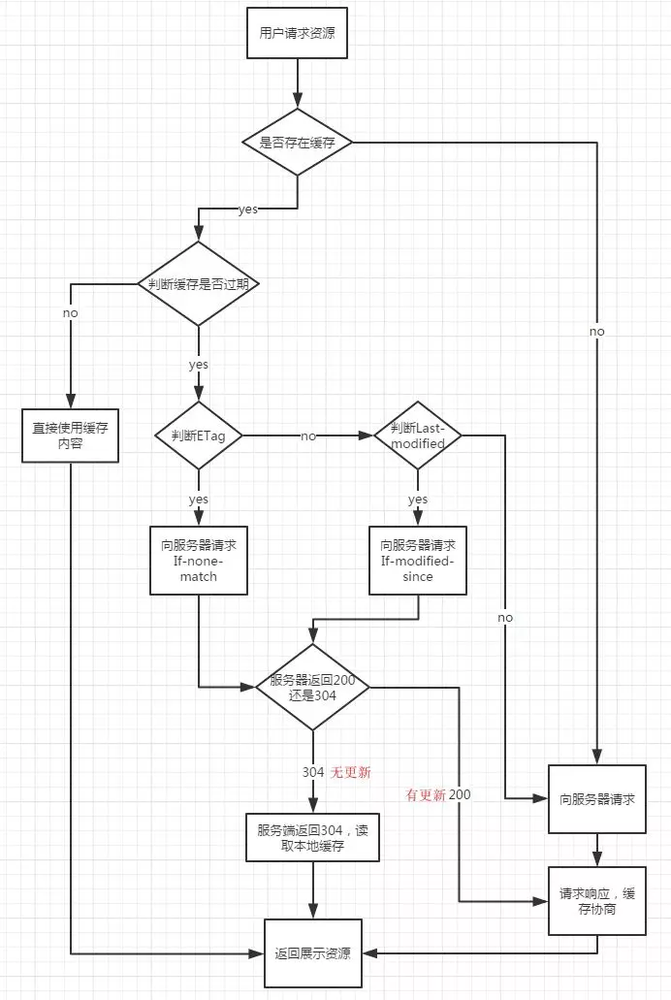
这张图中没有包含serverWorker的缓存判断流程 b，但是在后面会有一篇文章专门介绍serverWorker，因为他是属于PWA中的内容。
存储策略发生在收到请求响应后，用于决定是否缓存相应资源；过期策略发生在请求前，用于判断缓存是否过期；协商策略发生在请求中，用于判断缓存资源是否更新。
用户操作对缓存策略的影响
在用户刷新页面（F5）时，会对缓存产生影响，这里就会记录用户操作对缓存产生的影响。用户操作事项如下表所示：
| 用户操作 | 强缓存 | 协商缓存 |
|---|---|---|
| (新标签)地址栏回车 | 有效 | 有效 |
| (地址不变)地址栏回车 | 兼容性问题 Chrome(失效)/Firefox(有效) | 有效 |
| 链接跳转 | 有效 | 有效 |
| 前进/后退 | 有效 | 有效 |
| 从收藏栏打开链接 | 有效 | 有效 |
| (window.open)新开窗口 | 有效 | 有效 |
| 刷新（Command/Ctrl + R / F5） | 失效 | 有效 |
| 强制刷新（Command + Shift + R / Ctrl + F5） | 失效 | 失效 |
基本上包含了一些常见的用户操作对强缓存和协商缓存的影响，大致的判断流程如下：
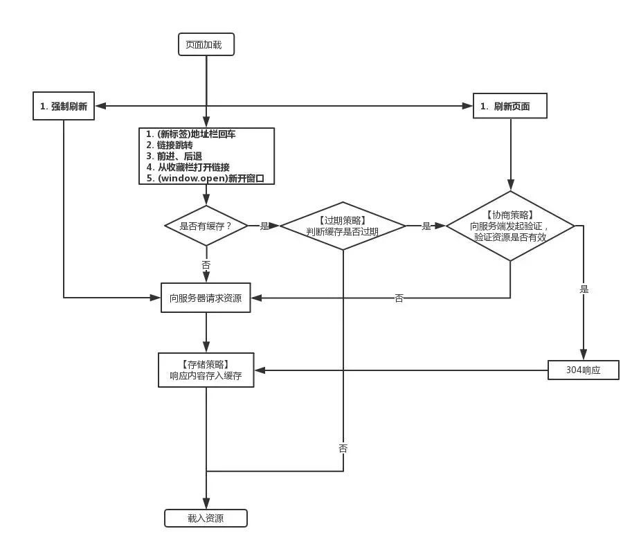
注意
- (地址不变)地址栏回车：它比较特殊，为什么它在Chrome是失效，在Firefox中是有效。因为Chrome把地址不变回车等同于刷新当前页面，而在Firefox都是作为新地址回车处理的。
webkit(Chrome内核)资源分为主资源和派生资源。主资源是地址栏输入的 URL 请求返回的资源，派生资源是主资源中所引用的 JS、CSS、图片等资源。- 在
Chrome下刷新时，只有主资源的缓存应用方式如上图所示，派生资源的缓存应用方式与新标签打开类似，会判断缓存是否过期。强缓存生效时的区别在于新标签打开为from disk cache，而当前页刷新派生资源是from memory cache。- 而在
Firefox下，当前页面刷新，所有资源都会如上图所示。
缓存储存的位置
从缓存的位置上来说分为四种，并且各自有优先级，当依次由上到下查找缓存且都没有命中的时候，才会去请求网络，大致如下：
- Service Worker
- Memory Cache
- Disk Cache
- Push Cache
Service Worker
Service Worker 是一种独立于主线程之外的 Javascript 线程。它可以帮我们实现离线缓存、消息推送和网络代理等功能。
使用
Service Worker的话，传输协议必须为HTTPS。因为Service Worker中涉及到请求拦截，所以必须使用HTTPS协议来保障安全。
Service Worker 实现缓存大致分为以下几个步骤：
- 首先需要在页面的 JavaScript 主线程中注册 Service Worker。
- 注册成功后后台开始安装步骤， 通常在安装的过程中需要缓存一些静态资源。
- 安装成功后开始激活 Service Worker
- 激活成功后 Service Worker 可以控制页面了（监听 fetch 和 message 事件），但是只针对在成功注册了 Service Worker 后打开的页面。
在这里就不细说了，后面有一个单独的章节来讲述Service Worker, Service Worker 的缓存与浏览器其他内建的缓存机制不同，它可以让我们自由控制缓存哪些文件、如何匹配缓存、如何读取缓存，并且缓存是持续性的。
Memory Cache
Memory Cache 是内存中的缓存。主要包含的是当前页面中请求到的数据如图片（base64）、脚本（JavaScript）、样式（css）等静态数据。读取内存中的数据肯定比磁盘中的快，但是内存中的缓存持续性很短，它会随着当前Tab 页面关闭，内存中的缓存也就被释放。
比如在百度首页刷新页面，效果如下图所示：
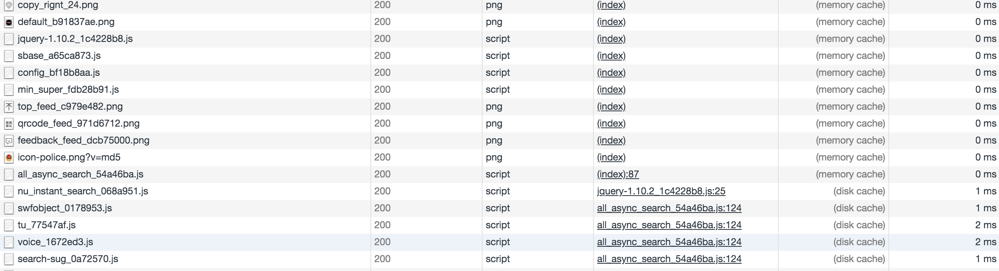
preload<link> 元素的 rel 属性的属性值preload，<link rel="preload">来显示的指定的预加载资源，也会被放入memory cache中。
prefetch<link rel="prefetch"> 已经被许多浏览器支持了相当长的时间，但它是意图预获取一些资源，以备下一个导航/页面使用（比如，当你去到下一个页面时）。
浏览器会给使用prefetch的资源一个相对较低的优先级与使用preload的资源相比。
subresource<link rel="subresource">被 Chrome 支持了有一段时间，并且已经有些搔到预加载当前导航/页面（所含有的资源）的痒处了。这些资源会以一个相当低的优先级被加载。Memory Cache不会轻易的命中一个请求，除了要有匹配的 URL，还要有相同的资源类型、CORS 模式以及一些其他特性。Memory Cache是不关心HTTP语义的，比如Cache-Control: max-age=0的资源，仍然可以在同一个导航中被重用。但是在特定的情况下，Memory Cache会遵守Cache-Control: no-store指令，不缓存相应的资源。
Memory Cache匹配规则在标准中没有详尽的描述，所以不同的浏览器内核在实现上会有所不同。
Disk Cache/HTTP Cache
HTTP Cache也被叫做Disk Cache。从字面的意思上理解Disk Cache就是储存在硬盘上的缓存，因此它是持久存储的，是实际存在于文件系统中的。
而且它允许相同的资源在跨会话，甚至跨站点的情况下使用，例如两个站点都使用了同一张图片。
HTTP Cache会根据HTTP Herder中的字段判断哪些资源需要缓存，哪些资源可以不请求直接使用，哪些资源已经过期需要重新请求。
当命中缓存之后，浏览器会从硬盘中读取资源，虽然比起从内存中读取慢了一些，但比起网络请求还是快了不少的。绝大部分的缓存都来自 disk cache。
凡是持久性存储都会面临容量增长的问题，
disk cache也不例外。在浏览器自动清理时，会有神秘的算法去把“最老的”或者“最可能过时的”资源删除，因此是一个一个删除的。不过每个浏览器识别“最老的”和“最可能过时的”资源的算法不尽相同，可能也是它们差异性的体现。
Push Cache
Push Cache（推送缓存）是 HTTP/2 中的内容，当以上三种缓存都没有命中时，它才会被使用。
它只在会话（Session）中存在，一旦会话结束就被释放，并且缓存时间也很短暂，在 Chrome 浏览器中只有 5 分钟左右，同时它也并非严格执行 HTTP 头中的缓存指令。
Push Cache 在国内能够查到的资料很少，也是因为 HTTP/2 在国内不够普及。这里推荐阅读Jake Archibald的 HTTP/2 push is tougher than I thought 这篇文章，文章中的几个结论：
- 所有的资源都能被推送，并且能够被缓存,但是 Edge 和 Safari 浏览器支持相对比较差
- 可以推送 no-cache 和 no-store 的资源
- 一旦连接被关闭，Push Cache 就被释放
- 多个页面可以使用同一个 HTTP/2 的连接，也就可以使用同一个 Push Cache。这主要还是依赖浏览器的实现而定，出于对性能的考虑，有的浏览器会对相同域名但不同的 tab 标签使用同一个 HTTP 连接。
- Push Cache 中的缓存只能被使用一次
- 浏览器可以拒绝接受已经存在的资源推送
- 你可以给其他域名推送资源
如果以上四种缓存都没有命中的话，那么只能发起请求来获取资源了。
那么为了性能上的考虑，大部分的接口都应该选择好缓存策略，通常浏览器缓存策略分为两种：强缓存和协商缓存，并且缓存策略都是通过设置 HTTP Header 来实现的。
关于 memory cache 和 disk cache
这两种缓存类型存在于 Chrome 中。disk cache 存在硬盘，可以存很多，容量上限比内容缓存高很多，而 memory cache 从内存直接读取，速度上占优势，这两个各有各的好处！
因为关于在什么时候用到什么缓存的文档相当的少所以真的不好判断，是当前使用的是哪个缓存，比如下面这个例子：
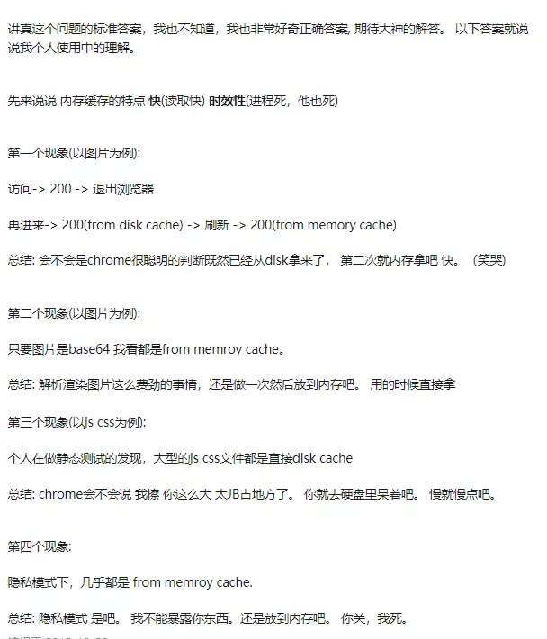
缓存策略之间的对比
其实缓存之间也没有太好的对比性，大致可以从缓存策略和缓存位置两个角度对比缓存的优缺点。
- 强缓存返回 http 200 OK 状态码，而协商缓存返回http 304 Not Modified 状态码
- 强缓存中的优先级为： Cache-Control > Expires
- 协商缓存中的优先级： Etag/If-None-Match > Last-Modified/Last-Since-Modified
- 协商缓存中，Last-Modified不能记录秒级以下的更新缓存，而Etag 可以。但是Etag 生成唯一资源标识符又比叫困难，而Last-Modified 实现起来比价简单
Service Worker相对于Disk Cache/Memory Cache配置会麻烦一点，但是Service Worker应用场景更广，性能也会好一点。Service Worker必须要在Https协议中才会生效。- Disk Cache相对于Memory Cache，它的优点在于容量大、储存周期长、可被多域使用，缺点在于读取速度慢
- Memory Cache相对于Memory Cache，它的优点在于速度快、对前端 link 字段支持性，缺点在于储存周期短（tab 也关闭）、空间有限
它们的值优缺点如上所示，如在chrome、firefox、ie中Memory cache和Disk cache也是不太相同的。
关于 Chrome、FF、IE 的缓存区别
Chrome浏览器的速度比其他两个浏览器的速度更快一点，主要是因为V8引擎的执行速度更快，另一方面应该就是它的缓存策略的使用。
从这四个方面强缓存、协商缓存、Disk Cache、Memory Cache来对比，为什么说Chrome执行效果比其它的两个浏览器的执行速度和加载速度更快。
就以百度首页为例看一下Chrome和Firefox的差别。
在Chrome和Firefox中打开https://www.baidu.com/首页，结果如下图所示
Firefox效果如下：
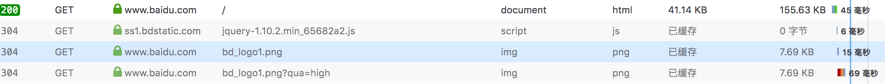
Chrome效果如下：
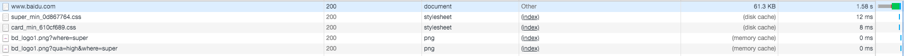
我们以百度的bd_logo1.png的请求为例，logo的请求是一个Get请求，同时它被设置了四个缓存配置，但是它在两个浏览器中表现并不相同，如下图所示
Firefox效果如下：
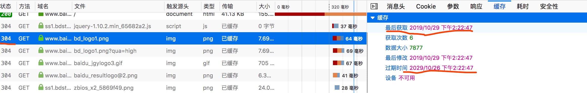
Chrome效果如下：
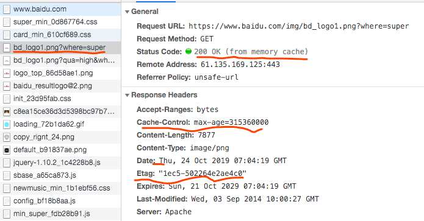
首先在再次请求时浏览器端都没有携带协商缓存需要的头部字段，所以它们肯定走的是强缓存，在强缓存中Cache-Control的优先级是最高的，所以都是走的Cache-Control的策略。
可以看到它们的区别如下几点：
- 状态码： 首先它们返回的状态码是不同的，Chrome返回的状态码是
200,Firefox返回的状态码是304。 - 使用的资源： 可以看到Chrome中的资源大小为
0(耗时 0ms，也就是 1ms 以内)，那么它使用的本地的资源。而Firefox中它是从服务器获取的资源。
测试实例
在这里我们来一个一个测试expires/cache-control/etag/last-modified/pragma它们是否和我们上面所总结的一致。
测试环境chrome 78.0.3904.70、node 12.9.1、koa 2.x.
整体的目录结构如下图所示：
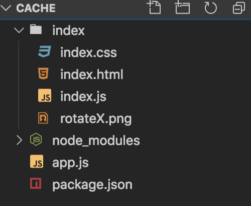
代码可能写的比较粗糙，但是后面会优化一下，公共代码如下：
index.html代码如下
1 |
|
app.js代码如下
1 | const Koa = require('koa'); |
下面的代码都是在这个代码上修改，index.js、index.css、rotateX.png自己写就可以，或者去网上下载一个稍微超过2kb大小的文件。
Cache-Control 实例
使用Cache-Control缓存测试效果，修改代码如下：
修改app.js
1 | // ...省略代码 |
我们在通过nodemon app.js运行代码，运行效果大致如下：
- 第一个打开
localhost:3000时，因为没有任何缓存所以资源是从服务器中请求来的，如下图所示
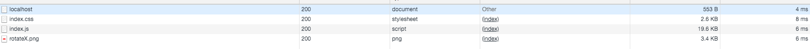 - 当我们刷新页面时，因为我们设置了
Cache-Control: max-age=10，所以会走本地缓存，如下图所示
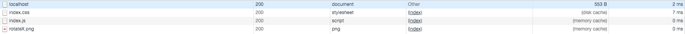
第二次请求，三个请求都来自memory cache。因为我们没有关闭 TAB，所以浏览器把缓存的应用加到了memory cache。(耗时 0ms，也就是 1ms 以内) - 当我们跳转到
https://www.baidu.com，再返回页面时，它也会走本地缓存，如下图所示
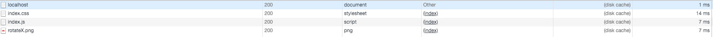
因为跳转页面等于是关闭了 TAB，memory cache也随之清空。但是disk cache是持久的，于是所有资源来自disk cache。(大约耗时 3ms，因为文件有点小)而且对比 2 和 3，很明显看到memory cache还是比disk cache快得多的。
no-cache 和 no-store 对比
我们来对比一下no-cache和no-store的区别，修改代码如下：
修改index.html
1 |
|
我们暂时不修改缓存的配置，通过nodemon app.js运行代码，运行效果大致如下：
- 同步请求方面，浏览器会自动把当次
HTML中的资源存入到缓存 (memory cache)，这样碰到相同src的图片就会自动读取缓存(但不会在Network中显示出来) - 异步请求方面，浏览器同样是不发请求而直接读取缓存返回。但同样不会在
Network中显示。
下面我们修改app.js中的代码如下：
1 | // ...省略代码 |
我们运行代码看的效果如下图所示：
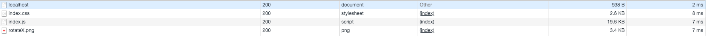
- 同步请求方面，浏览器会自动把当次
HTML中的资源存入到缓存 (memory cache)，这样碰到相同src的图片就会自动读取缓存(但不会在Network中显示出来)
如果把no-cache修改为no-store
修改app.js
1 | // ...省略代码 |
我们运行代码看的效果如下图所示：
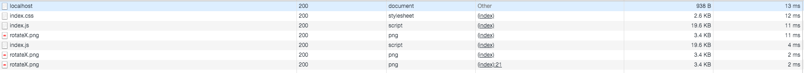
当我们设置了Cache-Control: no-store时，可以看到css、js文件都被请求了两次，png请求了三次。
- 如之前原理所述，虽然
memory cache是无视HTTP头信息的，但是no-store是特别的。在这个设置下，memory cache也不得不每次都请求资源。 - 异步请求和同步遵循相同的规则，在
no-store情况下，依然是每次都发送请求，不进行任何缓存。
Last-Modified/If-Modified-Since
这里来设置协商缓存Last-Modified/If-Modified-Since，代码修改如下：
修改app.js
1 | const responseFile = async (path, context, encoding) => { |
大致流程如下：
- 在
Chrome中选中Disable Cache禁用缓存，可以通过下面图片看到服务器端发送给客户端Last-Modified: Thu, 24 Oct 2019 05:12:37 GMT。
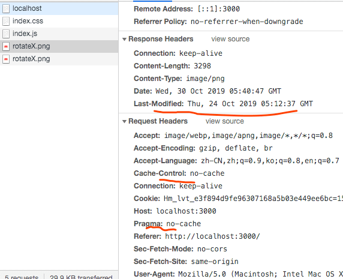 - 关闭
disable cache后再次访问图片时，发现带上了if-modified-since请求头，值就是上次请求响应的last-modified值，因为图片最后修改时间不变，所以304 Not Modified。效果如下图所示
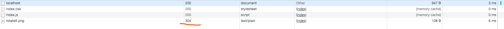
启用
Disable Cache时，我们可以看到客户端/浏览器端自动带上了Pragma':'no-cache'、'Cache-Control': 'no-cache'这两个字段，不适用缓存。
Etag/If-None-Match
修改app.js，通过npm i crypto -D安装crypto,用于生成md5。
1 | // 处理 css 文件 |
运行效果如下图所示：
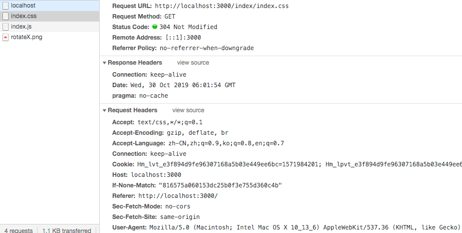
他的过程和Last-Modified/If-Modified-Since，但是因为Last-Modified/If-Modified-Since它不能监听1s以内的资源变化，所以一般用他来做Etag/If-None-Match的补充方案。
总结
缓存大致分为：强缓存、协商缓存。
强缓存:pragma、cache-control、expires协商缓存:last-modified/If-modified-since、etag/if-none-match强缓存优先级:cache-control > pragma > expires协商缓存优先级:etag/if-none-match > last-modified/If-modified-since
缓存位置分为： Service Worker、Memory Cache、Disk Cache、Push Cache，也是从左到右如果命中就使用。
上面的实例只是比较简单的应用，其实还有很多有意思的实例能加深对缓存的理解，如下：
pragma、cache-control、expires优先级last-modified/If-modified-since、etag/if-none-match优先级cache-control: no-cache与cache-control: max-age=0, must-revalidate效果是否相同chrome、firefox、ie之间的缓存差别
本篇文章有意避开Service Worker的详细介绍，因为会有单独的一篇文章来介绍Service Worker在真实应用的使用。
在线代码，可以刷新页面（刷新内部页面）在控制台中查看当前效果
参考
一文搞懂浏览器缓存机制
关于 http 缓存，这些知识点你可能都不懂
浏览器缓存策略
一文读懂前端缓存
通过 koa2 服务器实践探究浏览器 HTTP 缓存机制